The plane-tiling engine decides, for every polyform of a size, whether it tiles
by translations alone, isohedrally, only k-anisohedrally, or not at all. Everything there assumed two
coordinates. This page is the same pipeline rewritten once for Zd and run in space:
on cubes (polycubes) and on the other three lattice honeycombs whose cells are all congruent: rhombic dodecahedra,
truncated octahedra and hexagonal prisms. 4564 free polycubes up to n = 8 are classified,
and every tiling reported was re-checked by an independent verifier before it was counted.
Headline. Every polycube of up to 7 cells tiles space. That includes the four flat
heptacubes whose heptominoes cannot tile the plane; one of them, the U-heptacube, has no isohedral
tiling and needs exactly two orbits of tiles. Among the 3811 octocubes, 2472 tile by
translation, 1337 isohedrally and 1 only with two orbits. The one remaining octocube, the ring octocube (a 3×3 square annulus), is proved not to tile space, with or without mirror images. That makes it a smallest polycube that cannot tile space: every polycube with fewer cells tiles.
MethodOne engine for any dimension
Honeycombs from a Gram matrix. A lattice honeycomb is the Voronoi tessellation of a lattice; its cells
are coded by lattice coordinates, and the Gram matrix is all the geometry there is. The point group (every
integer M with MTGM = G), the facet neighbours (Voronoi-relevant vectors)
and the touching neighbours (via Voronoi vertices computed in exact rationals) are derived, not typed in.
This yields cubes (48 symmetries, 6 facets, 26 touching cells), rhombic dodecahedra (12 facets, 18 touching), truncated
octahedra (14 and 14) and hexagonal prisms (24 symmetries, 8 facets, 20 touching), plus squares and hexagons for checking against the plane.
Space groups by exact cover. Because every cell is a lattice point, the honeycomb's symmetry group is
symmorphic, Zd ⋊ P, and a candidate tiling group is a triple: a subgroup Q of the
point group (all 98 subgroups of the octahedral group, found by joins because some need three generators),
a Q-invariant sublattice, and a cocycle Q → Zd/Λ modulo coboundaries and
conjugacy. A k-orbit tiling is an exact cover of the quotient torus by k orbits of placements, exactly as in
the plane. What is new is scale: an asymmetric octocube needs index-384 sublattices for the full octahedral group, and
Z3 has 564 655 of them. A small C kernel filters invariant ones, and the enumerated groups are shape-independent,
so they are cached on disk.
Non-tiling proofs are Myers's: candidate neighbours, arc consistency, corona elimination, then a surround search.
In 3D the surround search can also branch on the most-constrained frontier cell. That is still complete, and on planar
non-tilers it gives the same verdict in 110 of 110 cases with far fewer nodes.
Verification. Every positive verdict is re-checked by verify_tiling, which ignores groups and covers.
It takes the placed tiles and the translation lattice and checks that each cell of one complete residue system lies in
exactly one tile.
ValidationChecked against the plane and against OEIS class for class
Run on squares and hexagons, the new engine must reproduce the planar engine, which is itself validated against
Myers's tables. It does, row by row, including every anisohedral k (Myers's 180° level is folded into
isohedral, since the 3D hierarchy has no analogue of it). The planar hexagon rows use surround depth 3, as the planar
engine does.
Polyominoes through the 3D engine, against results/square-n.json
| n | shapes | cavity | lattice | isohedral | anisohedral (k) | non-tiler | unresolved | ref |
|---|
| 1 | 1 | 0 | 1 | 0 | 0 | 0 | 0 | ✓ |
| 2 | 1 | 0 | 1 | 0 | 0 | 0 | 0 | ✓ |
| 3 | 2 | 0 | 2 | 0 | 0 | 0 | 0 | ✓ |
| 4 | 5 | 0 | 5 | 0 | 0 | 0 | 0 | ✓ |
| 5 | 12 | 0 | 9 | 3 | 0 | 0 | 0 | ✓ |
| 6 | 35 | 0 | 24 | 11 | 0 | 0 | 0 | ✓ |
| 7 | 108 | 1 | 41 | 63 | 0 | 3 | 0 | ✓ |
| 8 | 369 | 6 | 121 | 221 | 2:1 | 20 | 0 | ✓ |
| 9 | 1285 | 37 | 213 | 828 | 2:8 4:1 | 198 | 0 | ✓ |
| 10 | 4655 | 195 | 522 | 2504 | 2:41 3:3 | 1390 | 0 | ✓ |
Polyhexes through the 3D engine, against results/hex-n.json
| n | shapes | cavity | lattice | isohedral | anisohedral (k) | non-tiler | unresolved | ref |
|---|
| 1 | 1 | 0 | 1 | 0 | 0 | 0 | 0 | ✓ |
| 2 | 1 | 0 | 1 | 0 | 0 | 0 | 0 | ✓ |
| 3 | 3 | 0 | 3 | 0 | 0 | 0 | 0 | ✓ |
| 4 | 7 | 0 | 6 | 1 | 0 | 0 | 0 | ✓ |
| 5 | 22 | 0 | 12 | 10 | 0 | 0 | 0 | ✓ |
| 6 | 82 | 1 | 36 | 40 | 2:1 | 3 | 1 | ✓ |
| 7 | 333 | 2 | 60 | 230 | 2:3 3:1 | 32 | 5 | ✓ |
Enumeration: free polycubes 1, 1, 2, 7, 23, 112, 607, 3811
(= OEIS A038119 ✓); one-sided
1, 1, 2, 8, 29, 166, 1023, 6922 (= A000162 ✓); fixed polycubes
and fixed rhombic-dodecahedron animals match A001931 and A039742 (in tests/test_space.py).
PolycubesFree polycubes, reflections allowed n ≤ 8
Free polycubes: tiling class of every shape (mirror images allowed in the tiling)
| n | shapes | cavity | lattice | isohedral | anisohedral (k) | non-tiler | unresolved |
|---|
| 1 | 1 | 0 | 1 | 0 | 0 | 0 | 0 |
| 2 | 1 | 0 | 1 | 0 | 0 | 0 | 0 |
| 3 | 2 | 0 | 2 | 0 | 0 | 0 | 0 |
| 4 | 7 | 0 | 7 | 0 | 0 | 0 | 0 |
| 5 | 23 | 0 | 20 | 3 | 0 | 0 | 0 |
| 6 | 112 | 0 | 96 | 16 | 0 | 0 | 0 |
| 7 | 607 | 0 | 403 | 203 | 2:1 | 0 | 0 |
| 8 | 3811 | 0 | 2472 | 1337 | 2:1 | 1 | 0 |
No polycube of up to 7 cells has a sealed cavity or fails to tile. A sealed cavity needs a closed shell
of cubes around it, which takes far more than eight. The anisohedral column is almost empty: in the plane, 22 of the 369
octominoes are isohedral but not 180°-tilers, and one needs two orbits. In space, extra room makes tiling easier;
only 1 heptacube and 1 octocube need more than one orbit.
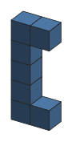
The U-heptacube: a flat 5-bar with both ends turned up. The U-heptomino does not tile the plane.
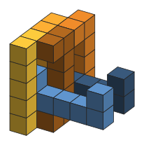
A verified 2-orbit tiling (colour = orbit). There is no isohedral tiling: every group was tried.
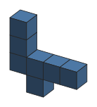
Flat heptacube whose heptomino is a plane non-tiler …
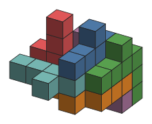
… tiles space isohedrally; the tiling group's point group is a single 3-fold rotation.
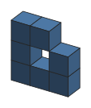
The holey heptomino as a slab: in space its hole is a tunnel, not a cavity …
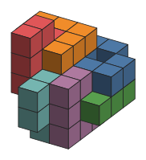
… and the slab tiles isohedrally.
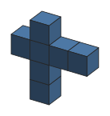
The third non-tiling heptomino, as a slab …
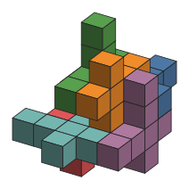
… is isohedral in space too.
All four flat heptacubes over the four heptominoes that cannot tile the plane tile space, each verified.
The U-heptacube is the only one of them, and the only heptacube, that needs two orbits.
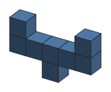
The one octocube with isohedral number 2: the U-heptacube plus a tooth under the middle of the bar.
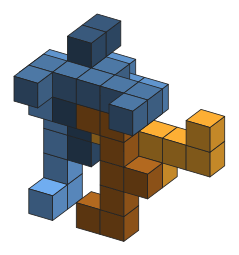
A verified 2-orbit tiling, colour = orbit. It is also the octocube needing the most copies per period (6, below).
PolycubesTiles per period: an external check on all 3811 octocubes exact match
The whuts solver reports, for every octocube, the fewest copies in a
periodic pattern: the least c for which c placed copies and their translates by some lattice partition space.
That measure differs from the isohedral number (a 1-orbit tiling can need several copies per period, and c copies can
form several orbits), but it is computable by the same machinery with no group structure at all (tiles_per_period),
so it gives an independent external check.
Octocubes by fewest tiles per translational period, c ≤ 6
| copies | ours, rotations | whuts | | ours, with mirrors |
|---|
| 1 | 2472 | 2472 | ✓ | 2472 |
| 2 | 1320 | 1320 | ✓ | 1321 |
| 3 | 4 | 4 | ✓ | 3 |
| 4 | 13 | 13 | ✓ | 13 |
| 5 | 0 | 0 | ✓ | 0 |
| 6 | 1 | 1 | ✓ | 1 |
| none found | 1 | 1 | ✓ | 1 |
With copies placed by rotations only (the whuts convention) the two distributions agree exactly, including the single
octocube that needs six copies and the ring, for which neither search finds anything. Allowing mirror images changes
exactly 1 shape:
[[0,0,0],[0,0,1],[0,0,2],[0,1,1],[0,2,0],[0,2,1],[1,0,1],[1,1,1]] drops from 3 copies to 2,
by pairing with its reflection.
PolycubesRotations only one-sided, n ≤ 8
A physical polycube cannot be turned into its mirror image. Restricting both the shapes and the tiling groups to proper
rotations (the planar project's "Spectre mode") makes the one-sided polycubes the natural objects. Shapes that need
more than one orbit or fail to tile, by size: n = 7: 5, n = 8: 8. The record is the tooth octocube above, isohedral number 2 with mirrors, which with rotations alone has no tiling of three orbits and a verified one of 4. Banning mirrors doubles its isohedral number.
One-sided polycubes: tilings by rotations and translations only
| n | shapes | cavity | lattice | isohedral | anisohedral (k) | non-tiler | unresolved |
|---|
| 1 | 1 | 0 | 1 | 0 | 0 | 0 | 0 |
| 2 | 1 | 0 | 1 | 0 | 0 | 0 | 0 |
| 3 | 2 | 0 | 2 | 0 | 0 | 0 | 0 |
| 4 | 8 | 0 | 8 | 0 | 0 | 0 | 0 |
| 5 | 29 | 0 | 26 | 3 | 0 | 0 | 0 |
| 6 | 166 | 0 | 148 | 18 | 0 | 0 | 0 |
| 7 | 1023 | 0 | 716 | 302 | 2:5 | 0 | 0 |
| 8 | 6922 | 0 | 4611 | 2303 | 2:6 4:1 | 1 | 0 |
Other honeycombsRhombic dodecahedra, truncated octahedra, hexagonal prisms
The same code, a different Gram matrix. In brief: every polyform of up to 6 rhombic dodecahedra tiles space; every polyform of up to 6 truncated octahedra tiles space; hexagonal prisms first fail at n = 6 (5 non-tilers).
Polyrhons: rhombic dodecahedra (face-centred cubic)
| n | shapes | cavity | lattice | isohedral | anisohedral (k) | non-tiler | unresolved |
|---|
| 1 | 1 | 0 | 1 | 0 | 0 | 0 | 0 |
| 2 | 1 | 0 | 1 | 0 | 0 | 0 | 0 |
| 3 | 4 | 0 | 4 | 0 | 0 | 0 | 0 |
| 4 | 20 | 0 | 19 | 1 | 0 | 0 | 0 |
| 5 | 131 | 0 | 103 | 28 | 0 | 0 | 0 |
| 6 | 1211 | 0 | 928 | 281 | 2:2 | 0 | 0 |
Truncated octahedra (body-centred cubic)
| n | shapes | cavity | lattice | isohedral | anisohedral (k) | non-tiler | unresolved |
|---|
| 1 | 1 | 0 | 1 | 0 | 0 | 0 | 0 |
| 2 | 2 | 0 | 2 | 0 | 0 | 0 | 0 |
| 3 | 6 | 0 | 6 | 0 | 0 | 0 | 0 |
| 4 | 35 | 0 | 33 | 2 | 0 | 0 | 0 |
| 5 | 251 | 0 | 187 | 64 | 0 | 0 | 0 |
| 6 | 2602 | 0 | 1929 | 669 | 2:4 | 0 | 0 |
Hexagonal prisms
| n | shapes | cavity | lattice | isohedral | anisohedral (k) | non-tiler | unresolved |
|---|
| 1 | 1 | 0 | 1 | 0 | 0 | 0 | 0 |
| 2 | 2 | 0 | 2 | 0 | 0 | 0 | 0 |
| 3 | 5 | 0 | 5 | 0 | 0 | 0 | 0 |
| 4 | 20 | 0 | 19 | 1 | 0 | 0 | 0 |
| 5 | 89 | 0 | 67 | 22 | 0 | 0 | 0 |
| 6 | 569 | 0 | 443 | 120 | 2:1 | 5 | 0 |
The hexagonal prisms carry a built-in check. A prism cannot be laid on its side (the honeycomb's symmetries keep the
hexagonal axis vertical), so a flat, one-layer shape can only tile layer by layer. It must therefore classify exactly as
its polyhex does, except that a polyhex's hole becomes a tunnel that nothing can fill. The engine is never told this,
and the table below comes out as it must. Where the planar run left a hexahex unresolved, the prism run
proves it a non-tiler (presumably because the layers above and below give the surround search more to contradict). Myers lists it as a non-tiler too.
Flat hexagonal-prism shapes against polyhexes (3D engine on both)
| n | flat prisms | polyhexes | flat prism classes | polyhex classes (hole → non-tiler) | |
|---|
| 1 | 1 | 1 | translation 1 | translation 1 | ✓ |
| 2 | 1 | 1 | translation 1 | translation 1 | ✓ |
| 3 | 3 | 3 | translation 3 | translation 3 | ✓ |
| 4 | 7 | 7 | isohedral 1, translation 6 | isohedral 1, translation 6 | ✓ |
| 5 | 22 | 22 | isohedral 10, translation 12 | isohedral 10, translation 12 | ✓ |
| 6 | 82 | 82 | isohedral 40, k=2 1, nontile 5, translation 36 | isohedral 40, k=2 1, nontile 4, translation 36, unresolved 1 | ✓ settles more |
The first non-tilerThe ring octocube does not tile space proved
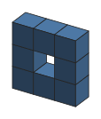
The ring octocube: eight cubes around an empty centre.
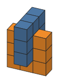
Its hole can only be filled by a second ring threaded through it; each fills the other's hole.
The 3×3 square annulus is the only polycube with at most eight cells that does not tile space. Its centre is a tunnel,
not a cavity, so it survives the cheap tests. The centre must be filled by another ring threaded through it at right angles,
like links of a chain. Every one of the candidate neighbours also survives arc consistency and corona elimination, so no
single corona is contradictory. The contradiction appears one layer out: the centre and all of its neighbours cannot all
be surrounded. The depth-2 surround search is exhaustive and finds no such patch
(it exhausts after 23,624 nodes), so the ring cannot tile. Mirror images are allowed throughout, so the result holds
with or without them. The rotations-only run proves it again independently, with its own candidate list
(24,049 nodes).
That search uses Myers's reductions, which assume a tiling. On the raw candidates (no reductions at all) 1-coronas exist, so its Heesch number is at least 1. A depth-2 search on the raw candidates, which would pin it at exactly 1, ran for 83 minutes without finishing, so that stays open. The non-tiling proof does not depend on it. Consistently, no periodic tiling exists with
up to 2 orbits or 6 tiles per period, and the whuts solver found none.
How it was found: branching on the first uncovered cell in scan order ran past 5 million nodes at
depth 2 without deciding. Branching on the most-constrained cell instead (the ring's hole alone admits only 4 placements) settles it in
23,624 nodes.
The planar non-tilers, where both orders can be run to completion, give identical verdicts under both.
ReproduceCommands
scripts/build_latfast.sh # optional C kernel (ctypes)
.venv/bin/python scripts/run_classify_space.py cube 1 2 3 4 5 6 7 8 --kmax 2
.venv/bin/python scripts/probe_space.py cube 8 --kmax 2 --depth 3
.venv/bin/python scripts/run_period_space.py cube 8 --cmax 6
.venv/bin/python scripts/render_space.py tiling cube out.svg '[[0,0,0],[0,0,1],[0,0,2],[0,0,3],[0,0,4],[0,1,0],[0,1,4]]' 2
.venv/bin/python scripts/gen_space_page.py # this page, from results/space/